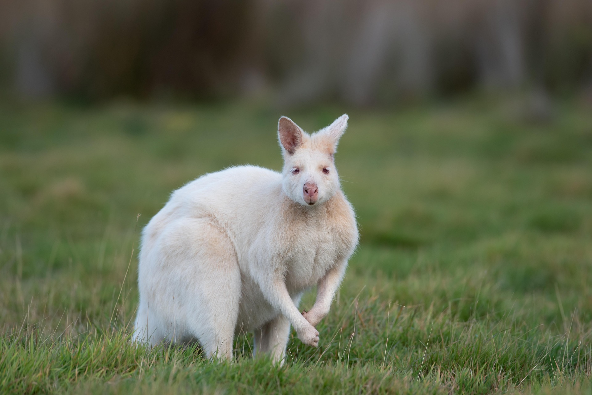

2-Ojos rosados o rojizos debido al albinismo.
3-Mayor sensibilidad a la luz solar, lo que puede afectar su piel y ojos.
4-Son más visibles para los depredadores en la naturaleza.
5-Son marsupiales, por lo que las crías se desarrollan en una bolsa llamada marsupio.